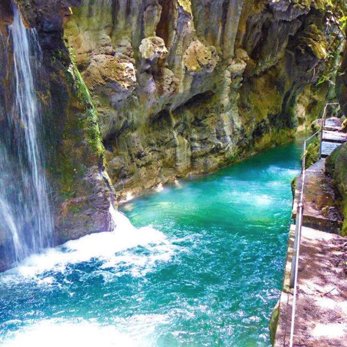
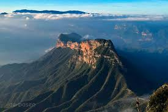

Los lugares turisticos son escenciales para mostrar la belleza de queretaro a los extranjeros.
Ahora mostraremos algunas de estas maravillas:
Cañón de la Angostura

Para llegar al Cañón se debe de atravesar el sorprendente Río Escanela rodeado por una bella vegetación boscosa, predominantemente de álamos.
El Cañón de la Angostura cuenta con más de 50 m y las grandes rocas moldean encantadoras pozas de agua cristalina.
Caminar entre estas enormes paredes y con el agua corriendo en su fondo es una experiencia inolvidable.
Peña de Bernal
Tercer monolito más grande del mundo, después del Peñón de Gibraltar en España y del Pan de Azúcar en Brasil. Cuenta con una altura de 288 metros de altura y una altitud de 2515 msnm. Tiene una existencia de más 10 millones de años y que procede de un volcán que a través de los años se volvió inactivo y que la lava en su interior se solidificó. Posteriormente la erosión y el tiempo hicieron desaparecer el resto del volcán y quedó solo el magma sólido. En noviembre de 2007, la Peña de Bernal recibió una presea de la Secretaría de Turismo y TV Azteca reconociéndola como una de las 13 Maravillas de México y considerándola como un destino turístico con gran relevancia histórica y cultural. En septiembre de 2009, se brindó el reconocimiento a la zona como Patrimonio Inmaterial de la Humanidad de la Unesco: «Lugares de memoria y tradiciones vivas de los otomí-chichimecas de Tolimán: la Peña de Bernal, guardiana de un territorio sagrado». Cada 21 de marzo, en el equinoccio de primavera, se reúnen en la peña miles de turistas, en una festividad místico-religiosa a cargarse de energía, que se cree transmiten las piedras monolíticas y los yacimientos minerales del interior.
Mirador Cuatro Palos

Descubre el Mirador Cuatro Palos en la Sierra Gorda de Querétaro, un lugar ideal para los amantes del ecoturismo y las vistas panorámicas. Disfruta del amanecer sobre un mar de nubes y explora rutas de senderismo que te conectan con la naturaleza. ¡Un destino imperdible en Pinal de Amoles!